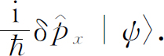
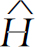
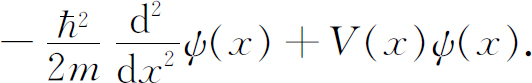
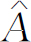
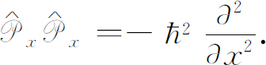
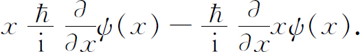
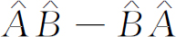
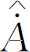
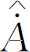

代表某个特定的操作。当这一操作作用于任一态，譬如态｜ψ
〉上，它产生某个其他的态｜φ
〉。
代表某个特定的操作。当这一操作作用于任一态，譬如态｜ψ
〉上，它产生某个其他的态｜φ
〉。到目前为止，虽然我们不时地告诉你们量子力学量和方程的一些特殊写法，但是我们在量子力学中所做的全部工作都可以用普通代数来处理。现在我们想再讲一些描述量子力学事件的有趣而有用的数学方法。处理量子力学问题有许多不同的方法，而大多数书本所采用的方法都与我们所用的不同。当你们继续阅读其他书籍时，你们可能不会立即看出这些书中所讲的方法与我们所用的方法之间的联系。虽然我们也能得出一些有用的结果，但本章的主要目的在于告诉你们一些描写相同物理事件的不同方法。知道了这些方法，你们就能更好地理解别人所讲的了。当人们最初提出经典力学时，他们总是用x ，y 和z 分量来写出所有的方程式。以后有人指出，发明矢量记号可以使所有的写法大为简化。的确，当你要计算什么时，常常需要将矢量变换成它的分量。但是当你使用矢量时，一般很容易看出发生些什么，而且许多计算也容易得多。在量子力学中，使用“态矢量”的概念可以用比较简单的方法写出许多事情。当然，“态矢量”｜ψ 〉并非三维空间中的几何矢量，而是代表物理状态 的一种抽象符号，此状态用“标记”或“名字”ψ 来识别。这种概念之所以有用，是因为量子力学的规律可以用这些符号写成代数方程。例如，任何状态都可由基础态的线性组合来构成，这个基本定律就可以写成
式中C i 是一组普通的（复）数——振幅C i ＝〈i ｜ψ 〉——而｜1〉、｜2〉、｜3〉…等等代表在某个基或表象 中的基础态。
如果取某个物理状态并对它作些变动——如转动或等候一段时间Δt ——则得到不同的态。我们说，“对一个状态进行一次操作产生了一个新的态。”我们可以用一个方程式来表示同一概念：
对态的一次操作产生另一个态。算符
代表某个特定的操作。当这一操作作用于任一态，譬如态｜ψ
〉上，它产生某个其他的态｜φ
〉。
式（20.2）表示什么意思呢？我们这样来定义 它，如果用〈i ｜乘以式（20.2），并将｜ψ 〉按式（20.1）展开，则得到
（态｜j
〉取自和｜i
〉相同的一组。）这正是一个代数式。数〈i
｜φ
〉给出了在态｜φ
〉中找到的每个基础态的量，它是以｜ψ
〉在各个基础态中的振幅〈j
｜ψ
〉的线性叠加表示的。数
正是表明有多少〈j
｜ψ
〉进入每个求和中的系数。算符 可用一组数或“矩阵”以数字来描述
可用一组数或“矩阵”以数字来描述
所以式（20.2）是式（20.3）的高级写法。实际上还不止这样，它含有更多的东西。在式（20.2）中我们完全没有提到一组基础态。式（20.3）是式（20.2）在某一组基础态中的映像，但是，如你们所知，你们可以选用你们想要的任意一组态，而式（20.2）就含有这种概念。算符的写法避免了作任意特定的选择。当然，当你想要得到明确的表示时，你必须选择一组基础态 ，当你选定后，你就用式（20.3）。因此算符 方程式（20.2）是代数方程式 （20.3）的更为抽象的写法。这两种写法之间的区别，类似于下面两种写法的差别
及
第一种写法要方便得多。然而，当你想要计算结果
时，你终究必须相对某组坐标轴给出各分量。同样地，如果你想要说出 真正表示什么意思，你必须准备根据某组
基础态给出矩阵A
ij
。只要你心中有一组｜i
〉，式（20.2）就与式（20.3）相同。（你们还应记住，一旦你知道了对一组特定的基础态的矩阵，你总可以算出相对于任何别的基础态的相应矩阵。你可以将矩阵从一个“表象”变换到另一个“表象”。）
真正表示什么意思，你必须准备根据某组
基础态给出矩阵A
ij
。只要你心中有一组｜i
〉，式（20.2）就与式（20.3）相同。（你们还应记住，一旦你知道了对一组特定的基础态的矩阵，你总可以算出相对于任何别的基础态的相应矩阵。你可以将矩阵从一个“表象”变换到另一个“表象”。）
式（20.2）的算符方程也可以用一种新的观点来考虑。如果我们设想某个算符 ，我们就可用它跟任意态｜ψ
〉来产生一个新的态
。有时用这种方法得到的“态”可能是很特殊的——它也许不代表我们在自然界中可能遇到的任何物理
情况（例如，我们可能得到一个态，它描述单个电子而不归一化）。换言之，我们有时可能得到数学上人为的“态”，这种人为的“态”可能仍然有用，或许作为某些计算过程的中间阶段可能是有用的。
，我们就可用它跟任意态｜ψ
〉来产生一个新的态
。有时用这种方法得到的“态”可能是很特殊的——它也许不代表我们在自然界中可能遇到的任何物理
情况（例如，我们可能得到一个态，它描述单个电子而不归一化）。换言之，我们有时可能得到数学上人为的“态”，这种人为的“态”可能仍然有用，或许作为某些计算过程的中间阶段可能是有用的。
我们已经告诉你们许多有关量子力学算符的例子。我们已有了转动算符 ，它作用于状态｜ψ
〉就产生一个新态，从转动后的坐标系来看，新的态就是原来的态。我们已有了宇称（或反演）算符
，它通过将所有的坐标反向来得到新的态。我们对自旋1/2粒子已有算符
和
，它作用于状态｜ψ
〉就产生一个新态，从转动后的坐标系来看，新的态就是原来的态。我们已有了宇称（或反演）算符
，它通过将所有的坐标反向来得到新的态。我们对自旋1/2粒子已有算符
和 。
。
算符 在第17章中是根据小角度 的转动算符来定义的
当然这意味着
在这个例子中， 是把态｜ψ 〉转动一个小角 后所得的态减去 原来的态后再乘以 。它代表的态是两个态之差 。
再举一个例子。我们有一个算符 ——称为动量算符（x
分量），由类似（20.6）的式子定义。如果
是使一个态沿x
方向移动距离L
的算符，则
——称为动量算符（x
分量），由类似（20.6）的式子定义。如果
是使一个态沿x
方向移动距离L
的算符，则 定义为
定义为
式中δ 是一个小位移。将状态｜ψ 〉沿x 移动一小距离δ 得出一个新的态｜ψ ′〉，我们说这一新态比原来的态增加了一点新的东西

我们所讨论的算符作用于像｜ψ 〉这样的态矢量上，而｜ψ 〉是物理状况的抽象描述。它们与作用在数学函数上的代数 算符大不相同。例如，d/dx 是一个算符，它作用于f （x ）使f （x ）变成一个新函数f ′（x ）＝df /dx 。另一个例子是代数算符 。你们可以看出为什么在两种情况下使用相同的名词。然而你应当记住这两类算符是不同的。量子力学算符 不作用于代数函数上，而作用于｜ψ 〉那样的态矢量上。不久你们就会看到两类算符都用于量子力学中，而且常用于相似类型的方程中。当你们初次学习这一课题时，最好一直记住这些差别，以后对这课题比较熟悉时，你们就会发现保留这两种算符之间的明显区别并不是很重要的。的确如此，你们会发现大多数教科书对这两类算符通常使用相同的记号。
我们现在接下去看看用算符能做些什么有用的事情。但是，首先有一点要特别注意，假设我们有一个算符 ，对于某基础态的矩阵为
。态
又在另一态｜φ
〉中的振幅为
。这个振幅的共轭复数是否有意义呢？你们应该能够证明
，对于某基础态的矩阵为
。态
又在另一态｜φ
〉中的振幅为
。这个振幅的共轭复数是否有意义呢？你们应该能够证明
式中 （读作“A 剑号”）是一个算符，其矩阵元为
为了得到 的i ，j 元素，你们可以先求 的j ，i 元素（要颠倒一下指数），再取它的复数共轭。态 处于｜ψ 〉中的振幅为态 处于｜φ 〉中的振幅的复数共轭。算符 称为 的“厄米伴随”。量子力学中的许多重要算符都具有一种特殊的性质，即当取它们的厄米伴随时仍回到原来的算符。若 是这种算符，则
我们称这种算符为“自伴”算符或“厄米”算符。
到目前为止，我们主要是使你回忆一下已经知道的东西。现在我们想要讨论一个新问题，如何求一个系统——譬如一个原子——的平均能量 ？如果一个原子处于某个确定能量的特殊状态，并且你去测量这个能量，则你将得到一个确定的能量E 。如果你继续重复测量所有选定、处在相同状态的每一个原子，则所有测量结果都将是E ，你多次测量的“平均”当然也就是E 。
但是，现在如果你对某个非定态｜ψ 〉进行测量，那么会发生什么情况呢？既然系统没有确定的能量，因此一次测量将给出一个能量，对处于同样状态的其他原子所作的相同测量将给出不同的能量，等等。对整个一系列的能量测量求平均，你会得出什么呢？
通过把态｜ψ 〉投影到一组具有确定能量的态上，我们就能回答这个问题。为了提醒你这是一组特殊的基础态，我们将这些态称为｜η i 〉。态｜η i 〉中的每一个都有确定的能量E i ，在这个表象中，
当你进行一次能量测量并得到某数值E i 时，你会发现系统处于态｜η i 〉。但是对每一次测量，你可能得到不同的数值。有时得到E 1 ，有时得到E 2 ，有时为E 3 ，等等。观察到能量E 1 的概率 就是该系统处于状态｜η 1 〉的概率，这当然就是振幅C 1 ＝〈η 1 ｜ψ 〉的绝对值的平方。找到各个可能的能量E i 的概率为

这些概率与整个一系列能量测量的平均值有何关系呢？设想我们得到这样一系列的测量结果：E 1 ，E 7 ，E 11 ，E 9 ，E 1 ，E 10 ，E 7 ，E 2 ，E 3 ，E 9 ，E 6 ，E 4 等等；我们继续测量，譬如说测量了1000次。当我们测完后，把所有的能量相加并用1000去除，这就是我们所说的平均。把所有的数加起来也有一条捷径。你可以把得出E 1 的次数加起来，譬如说为N 1 ，然后把得出E 2 的次数加起来，称之为N 2 ，等等，所有能量的总和必定为
平均能量为此总和除以测量的总次数，总次数就是所有N i 之和，记为N ，
我们已相当接近答案了。我们所指的发生某事的概率，正是我们期望发生的次数除以总的测试次数。对于大的N ，比值N i /N 会非常接近于P i ，即非常接近于找到态｜η i 〉的概率；由于统计涨落，N i /N 不会严格地等于P i 。让我们把这预测（或期望）的平均能量记为〈E 〉平均 ，则有
同样的论证适用于任何测量。测量的量A 的平均值应等于
式中A i 是被观察量的各种可能值，P i 是得到该值的概率。
让我们回到量子力学状态｜ψ 〉，它的平均能量为
注意这里的奥妙！首先，我们将该和写为
其次，把左边的〈ψ ｜当作公“因子”，我们可以把这个因子提到求和号外面，并把它写为
这个表示式具有下列形式：
这里｜φ 〉是由下式定义的某个“虚构”的态：
换言之，如果你按数量E i 〈η i ｜ψ 〉选取各个基础态｜η i 〉，你就得到这个态。
现在回想一下态｜η i 〉是什么意思。它们假定是定态——所谓定态我们的意思是对每一个态
因E i 只是一个数，所以上式右边与｜η i 〉E i 相同，因而式（20.16）中的求和与下式一样，
现在i 只出现在缩并为1的熟知的组合中，所以
真是奇迹！式（20.16）与下式相同：
态｜ψ 〉的平均能量可以非常优美地写为
为了得到平均能量，就用 作用于｜ψ 〉上，然后再乘以〈ψ ｜，结果很简单。
我们所得到的求平均能量的新公式不仅漂亮，而且也很有用。因为现在我们一点也不必提及任何特定的一组基础态了。我们甚至没有必要知道所有可能的能级。当进行计算时，我们需要用某组 基础态来描述我们的态，但是如果我们知道了对于这组 基础态的哈密顿矩阵H ij ，我们就能得到平均能量。式（20.18）表明，对任何 一组基础态｜i 〉，平均能量可以由下式求得
式中振幅 就是矩阵元H ij 。
让我们对具有确定能量的态｜i 〉这种特殊情况来检验一下这个结果。对这种态， ，所以 ，而
这一表示式是正确的。
顺便指出，式（20.19）可以推广到其他物理量测量上，只要这些量可以用一个算符来表示。例如， 是角动量
L
的z
分量算符。态｜ψ
〉的z
分量平均值为
是角动量
L
的z
分量算符。态｜ψ
〉的z
分量平均值为
证明上式的一种方法是，想象某种情况，其能量正比于角动量。于是所有的论证用上述相同的步骤进行。
概括地讲，如果一个物理可观察量A 与一个适当的量子力学算符 相联系，对态｜ψ 〉来说A 的平均值为
我们说这个式子表示
而
假定我们想要知道一原子处在由波函数ψ （ r ）所描述的状态的平均能量，我们怎样去求呢？首先让我们来考虑一维的情况，此时态｜ψ 〉由振幅〈x ｜ψ 〉＝ψ （x ）来定义。我们要求用坐标表象的式（20.19）的特殊情况。依我们常用的步骤，我们用｜x 〉和｜x ′〉来代替态｜i 〉和｜j 〉，并且把求和改成积分，得
如果愿意，我们可将这积分写为
而
式（20.25）中对x ′的积分与第16章中式（16.50）及（16.52）的积分相同，并且等于

因此有
记住〈ψ ｜x 〉＝〈x ｜ψ 〉* ＝ψ * （x ），利用这一等式，式（20.23）中的平均能量可写成
给定波函数ψ （x ），你就可通过完成这个积分而得到平均能量。现在你可以开始看出从态矢量的概念发展到波函数概念是怎样来回变换的。
式（20.27）括号中的量是一个代数 算符 (1) ，我们将其写成
用这种记号，式（20.23）变为
这里所定义的代数算符 当然与量子力学算符
不同。新算符作用于位置函数ψ
（x
）＝〈x
｜ψ
〉以给出一个x
的新函数φ
（x
）＝〈x
｜φ
〉，而
作用于态矢量｜ψ
〉给出另一态矢量｜φ
〉，根本不涉及坐标表象或任何特殊表象。即使在坐标表象中，
和
当然与量子力学算符
不同。新算符作用于位置函数ψ
（x
）＝〈x
｜ψ
〉以给出一个x
的新函数φ
（x
）＝〈x
｜φ
〉，而
作用于态矢量｜ψ
〉给出另一态矢量｜φ
〉，根本不涉及坐标表象或任何特殊表象。即使在坐标表象中，
和 也不严格相同。如果我们选定在坐标表象中进行计算，我们将以矩阵
来解释
以某种方式取决于两个“指标”x
和x
′，即按照式（20.25），我们期望〈x
｜φ
〉通过积分而与所有的振幅〈x
｜ψ
〉联系起来。另一方面，我们发现
也不严格相同。如果我们选定在坐标表象中进行计算，我们将以矩阵
来解释
以某种方式取决于两个“指标”x
和x
′，即按照式（20.25），我们期望〈x
｜φ
〉通过积分而与所有的振幅〈x
｜ψ
〉联系起来。另一方面，我们发现 是一个微分算符。在§16-5中我们就已得出
和代数算符
是一个微分算符。在§16-5中我们就已得出
和代数算符 之间的联系。
之间的联系。
我们应对我们所得的结果作一限制。我们业已假定振幅ψ （x ）＝〈x ｜ψ 〉是归一化的。这个假定的意思是指标度的选取应使
所以，发现电子在整个x 区域内 的概率是1。如果你用了未归一化的ψ （x ）来计算，则应当写成
结果相同。
注意，式（20.28）与式（20.18）在形式的相似性，当你使用x 表象时，这两种描写相同结果的方式是经常出现的。使用任何一个局域 算符 ，你就可以从第一种形式转变到第二种形式。所谓局域算符，是一个在积分

中可以写成 的算符，这里
的算符，这里 是一个微分代数算符。但是，有的算符就不是这样的；对于这种算符，你必须用式（20.21）和（20.22）的基本方程。
是一个微分代数算符。但是，有的算符就不是这样的；对于这种算符，你必须用式（20.21）和（20.22）的基本方程。
你们可以很容易地把这种推导推广到三维的情况，结果为 (2)
而
并且要知道
同样的这些式子可以直接了当地推广到具有几个电子的系统上去，而这里我们不再费心去写出这些结果。
应用式（20.30），即使我们不知道原子的能级也能计算原子态的平均能量，我们所需要的只是波函数。这是一个重要的规律。我们将告诉你们一个有趣的应用。假定你们想知道某个系统的基态能量——譬如说氦原子，但因变量太多，所以由解薛定谔方程来求波函数太困难了。然而，假如你猜一下波函数——随便挑选一个函数——而计算其平均能量。这就是说，如果原子真的处在用这个波函数所描述的状态，则你们就可用式（20.29）——推广到三维情况——求出平均能量。这个能量肯定比基态能量高，因为基态能量是原子所可能具有的最低能量 (3) 。现在选取另一个函数并计算它的平均能量。要是它低于你第一次选取的波函数所得到的能量，它就比较接近真正的基态能量了。如果你继续试用各种人为的状态，你就可能获得越来越低的能量，它越来越接近基态的能量。如果你很聪明，你会试用某种具有几个可调参量的函数，所算得的能量将以这些参量来表示，通过改变这些参量来得出最低的可能的能量，你试了整个一类函数。你终于发现，要得到更低的能量将越来越困难，并且开始相信已经相当接近最低的可能能量了。氦原子就是用这种方法解出的——不是解一个微分方程，而是造出一个具有许多可调参量的特殊函数，通过选择这些参量最终得出平均能量的最低可能值。
原子中电子位置的平均值是什么呢？对任何特定的态｜ψ 〉坐标x 的平均值是什么呢？我们将计算一维情况，而由你们自己把这种概念推广到三维情况以及多于一个粒子的系统。设有一以ψ （x ）描述的状态，我们一次又一次地不断地测量x ，平均值是什么呢？它是
式中P （x ）dx 为在x 处的小范围dx 内找到电子的概率。假定概率密度P （x ）随x 的变化如图20-1所示，则此电子最可能在曲线的峰值附近被发现。x 的平均值也在靠近峰值附近的地方，实际上，它就是曲线所围面积的重心（位置）。
图20-1 表示一个定域粒子的概率密度曲线
早先我们已看到P （x ）就是｜ψ （x ）｜2 ＝ψ * （x ）ψ （x ），所以我们可以把对x 的平均写成
我们所得的〈x 〉平均 的式子与式（20.28）有相同的形式。对于平均能量，能量算符 出现在两个ψ 之间，而对于平均位置，正好是x 。（如果愿意，你可以把x 当作一个“用x 相乘”的代数算符。）我们可以把这种对比再加引申，用与式（20.18）相应的形式来表示平均位置。假设我们写出
而
然后看看是否能找到这个产生状态｜α
〉的算符 ，以使式（20.34）与式（20.33）相一致。这就是说，我们必须找到一个｜α
〉，使得
，以使式（20.34）与式（20.33）相一致。这就是说，我们必须找到一个｜α
〉，使得
首先，把〈ψ ｜α 〉在x 表象中展开，它为
现在比较上面最后两式的积分，你们看到在x 表象中
将 作用于｜ψ
〉上以得到｜α
〉，相当于用x
乘ψ
（x
）＝〈x
｜ψ
〉以得到α
（x
）＝〈x
｜α
〉。这样，我们就有了
在坐标表象中的定义
(4)
。
作用于｜ψ
〉上以得到｜α
〉，相当于用x
乘ψ
（x
）＝〈x
｜ψ
〉以得到α
（x
）＝〈x
｜α
〉。这样，我们就有了
在坐标表象中的定义
(4)
。
［我们并没有费心去设法得出算符 在x 表象中的矩阵。如果你有兴趣，你可设法证明
那么你能得到令人高兴的结果
算符 具有有趣的性质，当它作用于基础态｜x
〉时，它相当于用x
相乘。］
具有有趣的性质，当它作用于基础态｜x
〉时，它相当于用x
相乘。］
你想要知道x 2 的平均值吗？它为
或者，如果你喜欢，可以写为

并且
这里 的意思是 ——两个算符一个接一个地使用。有了第二种形式，你就可以用你想用的任何表象（基础态）来计算〈x 2 〉平均 。如果你想计算x n 或任何x 的多项式的平均值，你会知道如何去求。
现在我们要计算电子的平均动量 ——仍限于一维的情形。设P （p ）dp 为测得动量在p 到p ＋dp 之间的概率。于是
现在设〈p ｜ψ 〉为态｜ψ 〉在确定动量的态｜p 〉中的振幅，这就是我们在§16-3中称为〈动量p ｜ψ 〉的振幅，它是p 的函数，就像〈x ｜ψ 〉是x 的函数一样。在该处，我们选取归一化的振幅，使得
于是我们有
这个形式和〈x 〉平均 非常相似。
要是我们愿意，我们完全可用求〈x 〉平均 同样的方法来处理。首先，我们可以把上面的积分写成
你们现在应该看出，此式就是振幅〈ψ ｜β 〉的展开式——用确定动量的基础态来展开。由式（20.45），态｜β 〉在动量表象中 由下式定义
这样，我们可写出
并且
上式中算符 是根据p
表象而由式（20.47）定义的。
是根据p
表象而由式（20.47）定义的。
［再者，如果你愿意，可以证明 的矩阵形式为

而
结果与x 的情况相同。］
现在出现了一个有趣的问题。虽然我们能像我们对式（20.45）和式（20.48）所做的那样来写出〈p
〉平均
，并且知道算符 在动量表象中
的意义，但我们应如何在坐标表象
中解释
在动量表象中
的意义，但我们应如何在坐标表象
中解释 呢？就是说，当我们有了某个波函数ψ
（x
）而想要求其平均动量必须知道什么。明白地讲，如果〈p
〉平均
由式（20.48）给出，我们可以根据动量表象将该式展开而回到式（20.46）。如果我们给出了态的p
描述——振幅〈p
｜ψ
〉，它是动量p
的代数函数——则我们可以从式（20.47）得到〈p
｜β
〉，再进一步算出积分。现在问题是：倘若我们给出了态在x
表象中的描述，即给出了波函数ψ
（x
）＝〈x
｜ψ
〉，那我们怎样处理呢？
呢？就是说，当我们有了某个波函数ψ
（x
）而想要求其平均动量必须知道什么。明白地讲，如果〈p
〉平均
由式（20.48）给出，我们可以根据动量表象将该式展开而回到式（20.46）。如果我们给出了态的p
描述——振幅〈p
｜ψ
〉，它是动量p
的代数函数——则我们可以从式（20.47）得到〈p
｜β
〉，再进一步算出积分。现在问题是：倘若我们给出了态在x
表象中的描述，即给出了波函数ψ
（x
）＝〈x
｜ψ
〉，那我们怎样处理呢？
我们首先将式（20.48）在x 表象中展开，它为
然而，我们需要知道在x 表象中态｜β 〉是什么，如果我们能求出它，就可算出此积分。所以我们的问题在于求出函数β （x ）＝〈x ｜β 〉。
我们可用下面的办法求得它。在§16-3中我们已知〈p ｜β 〉与〈x ｜β 〉的关系，根据式（16.24）
如果我们知道了〈p ｜β 〉，那就可由此式解出〈x ｜β 〉。当然，我们所希望的是以某种方式将结果用ψ （x ）＝〈x ｜ψ 〉表示出来，ψ （x ）是假定已知的。假设我们由式（20.47）开始，再次利用式（16.24）后写出
既然上式是对x 积分，就可以把p 放到积分号里去，并写为
把此式与式（20.53）相比较，你们会说〈x ｜β 〉等于p ψ （x ）。不，不对！波函数〈x ｜β 〉＝β （x ）仅与x 有关，而与p 无关，这就是整个问题之所在。
但是，某个机灵的人发现式（20.55）中的积分可用分部积分法来进行。 对x 的微商是 ，所以式（20.55）中的积分等于
如果进行分部积分，它成为
只要我们讨论的是束缚态，所以当x ＝±∞时ψ （x ）趋向0，则括号内就为0，因而有

现在把这结果与式（20.53）比较，你们看到
至此，我们已有了能完成式（20.52）积分所必需的关系式。答案为
我们求得了式（20.48）在坐标表象中的形式。
现在你应开始看出一个有趣的图式展开。当我们问及态｜ψ 〉的平均能量时，我们说它是
在坐标表象中同样的事件被写为
式中 为作用于x
的函数的代数
算符。当我们问及x
的平均值时，我们发现它也能够写成
为作用于x
的函数的代数
算符。当我们问及x
的平均值时，我们发现它也能够写成
在坐标表象中相应的方程式为
当我们问及p 的平均值时，我们写成
在坐标表象中其等价的表示式为
在上面3个例子中，我们都从态｜ψ 〉开始，由量子力学 算符产生另一个（假设的）态。在坐标表象中，我们将代数 算符作用在波函数ψ （x ）上来生成相应的波函数。有如下一一对应关系（对一维问题）：
表 20-1
在这个表中，我们对代数算符 引入符号 ：
我们对 加上下标x 是为了提醒你们，我们只是与动量的x 分量打交道。
你们很容易地把这结果推广到三维的情况，其余两个动量分量为
如果愿意，你们甚至可以想到矢量 动量的算符，并写为
式中 及 为3个坐标方向的单位矢量。如果我们写成如下形式，则看起来更为漂亮，
总的结果是：至少对某些量子力学算符，在坐标表象中有相应的代数算符。我们把到目前为止所得的结果——推广到三维情况——总结列入表20-1中。对每一个算符，我们有两个等价的形式 (5) ：
或
现在我们举一些例子来说明这些概念的应用。第一个例子就是指出
和 之间的关系。如果使用
两次，则得
之间的关系。如果使用
两次，则得

这就意味着我们能够写出等式
或者用矢量符号，上式为
（在代数算符中，任何没有算符符号 的项就表示直接相乘。）此式很妙，因为要是你还没有忘记经典物理，就很容易记住它。每个人都知道（粒子的）能量（非相对论性）就是动能p 2 /2m 加势能，而 是总能量算符。
这结果给人们留下了很深的印象，所以他们在教学生量子力学之前，试图教给学生的都是经典物理学。（我们的想法不同！）但是这种类比常常引起误解。举个例说，当使用算符时，各种因子的顺序 很重要，但在经典方程式中却不是这样的。
在第17章中，我们根据位移算符 用下式［参见式（17.27）］定义了算符 ：
式中δ 是一小 位移。我们应证明这个式子中的定义与我们新的定义是等价的。按照我们刚才所得出的，上式应与下式
有相同的意义。但此式右边正好是ψ （x ＋δ ）的泰勒展开式，如果使态向左移动δ （或将坐标向右移动相同的数量），你所得到的无疑就是ψ （x ＋δ ）。所以 的两个定义相一致！
让我们用这个事实来说明另一些事情。假设有一群粒子处于某个复杂系统中，我们把它们记为1，2，3，…。（为了简便起见仍限于一维。）描述此状态的波函数是所有坐标x 1 ，x 2 ，x 3 ，…的函数。我们可把它写成ψ （x 1 ，x 2 ，x 3 ，…）。现再将此系统（向左）移动δ ，新的波函数
可以写成
根据式（20.65），态｜ψ 〉的动量算符（我们称其为总 动量）等于
但此式就是
动量算符也遵从总动量为各部分动量之和的规律。一切都很好地联系起来了，并且我们所讲过的许多事情都是相互一致的。
让我们随便看一下另一种运算——轨道角动量的运算。在第17章中，我们根据
定义了算符
是绕z
轴旋转角度φ
的算符。这里我们考虑只用一个波函数ψ
（
r
）所描述的系统，ψ
（
r
）只是坐标的函数，并不考虑电子是否有朝上或朝下的自旋。这就是说，我们想暂时不去考虑电子的内禀
角动量，而只考虑其轨道
部分。为了区分清楚，我们称轨道算符为
，并且根据转动无限小角 的算符由下式将它定义：
的算符由下式将它定义：
（记住，这个定义仅适用于不包含内在的自旋变量的态｜ψ 〉，它只与坐标 r ＝x ，y ，z 有关。）如果我们在一绕z 轴转过小角 后的新坐标系中来看态｜ψ 〉，我们所看到新的态为
如果我们愿意在坐标表象中描写此态｜ψ 〉——也就是用它的波函数ψ ′（ r ）来描写，我们可以把它写为
是什么呢？从图20-2可以看出，在新坐标系中x 和y （实际上应是x ′和y ′，但我们把撇号省略了）处的一点P 以前是在 和 处。因为电子位于P 点的振幅不因坐标转动而改变，我们可以写出
（记住 为小角度。）这意味着
这就是我们的答案。但是注意，它等价于
回到量子力学算符，我们可写为
这公式很容易记忆，因为它很像经典力学中熟知的公式，即它很像
的z 分量。
图20-2 坐标绕z 轴转动一小角度
算符问题的一个有趣的方面是把许多经典方程转变为量子力学的形式。哪些方程并非如此呢？最好有一些不成立，因为如果每个式子都这样，则量子力学就没有什么区别了，也就没有新的物理学了。这里有一个式子就不一样，在经典物理中，
在量子力学中它是什么呢？即
让我们在x 表象中把它算出来。为了明确起见，我们代入某个波函数ψ （x ），于是有
或

注意微商作用于它右边的每个部分。我们得出
结果不为 零。整个运算就等于乘以 ：
假如普朗克常数为零，则经典结果和量子结果就会相同，那就不必要学量子力学了。
顺便提一下，如果任意两个算符 和 ，如下组合起来

而不为零时，则我们说“这两个算符不对易”，而像式（20.74）那样的等式称为它们的“交换定则”。你可以看出 和 的交换定则为
还有另一个与角动量有关的非常重要的交换定则，它为
作为练习，你可以用算符 和
和 自己来证明它。
自己来证明它。
有趣的是在经典物理中也有不对易的算符。当我们讨论在空间中的转动时就已见到过这种情况。如果你把某物体，例如一本书，先绕x 轴旋转90°，然后绕y 轴转90°，所得的结果与先绕y 轴旋转90°、然后绕x 轴转90°的结果不同。事实上式（20.75）的根源正是空间的这种性质。
现在我们要向你们说明一些别的事情。平均值如何随时间变化呢？现在假定有一个算符 ，它本身并不以明显的方式包含时间，我们的意思是指像
或
那样的算符。（我们不考虑像随时间而变化的某种外来势的算符，诸如V
（x
，t
）。）现在我们计算在某态｜ψ
〉的〈A
〉平均
，它为
，它本身并不以明显的方式包含时间，我们的意思是指像
或
那样的算符。（我们不考虑像随时间而变化的某种外来势的算符，诸如V
（x
，t
）。）现在我们计算在某态｜ψ
〉的〈A
〉平均
，它为
〈A
〉平均
与时间的关系怎样呢？它为何与时间有关呢？一个原因可能是算符本身明显地与时间有关——例如，如果它涉及像V
（x
，t
）这样的随时间变化的势。但是，即使算符与时间t
无关，譬如说算符
，其相应的平均值也可能与时间有关。粒子的平均位置当然可以移动。如果 与时间无关，这种运动如何由式（20.76）得出呢？态｜ψ
〉可能随时间而变化。对于非定态，我们往往把该态写成｜ψ
（t
）〉，以明确地表示它对时间的依赖关系。我们要证明〈A
〉平均
的变化率是由一个称为
的新算符给出的。记住
与时间无关，这种运动如何由式（20.76）得出呢？态｜ψ
〉可能随时间而变化。对于非定态，我们往往把该态写成｜ψ
（t
）〉，以明确地表示它对时间的依赖关系。我们要证明〈A
〉平均
的变化率是由一个称为
的新算符给出的。记住 是一个算符，所以在
是一个算符，所以在 上加一点并不表示它对时间取微商，而仅为新
算符
的一种写法，其定义为
上加一点并不表示它对时间取微商，而仅为新
算符
的一种写法，其定义为
我们的问题是找出算符 。
首先，我们知道状态的变化率由哈密顿给出，明确地讲为
这正是对我们哈密顿原来的定义的抽象写法：
如果取式（20.78）的复数共轭，它等价于：
其次，看看如果我们将式（20.76）对t 求微商，其结果将如何。既然ψ 与t 有关，则有
最后，用（20.78）及（20.79）两式来代替上式中的微商，我们得到
此式与下式相同：
将此式与式（20.77）相比较，可看到
这就是我们感兴趣的表述，它对任何算符 都成立。
顺便提一下，如果算符 本身 就与时间有关，则必定有
现在让我们用几个例子来试一下式（20.82），看它是否真的有意义。例如，什么算符与 相对应？我们说，它应该是
这是什么呢？找出其意义的一种办法是，用 的代数算符在坐标表象中把它算出来。在坐标表象中，对易式为
的代数算符在坐标表象中把它算出来。在坐标表象中，对易式为
如果把它作用在任意波函数ψ （x ）上，并算出所有的微分，经过简单运算，最后可得
然而这正好与
相同。所以我们得到
或
这是一个奇妙的结果，它意味着，如果x 的平均值随时间而改变，则重心的移动等同于平均动量除以m 。与经典力学完全相似。
再举一个例子。一个态的平均动量的变化率是什么？同样处理。它的算符是
你仍然可以在x
表象中运算。记住这时 变为d/dx
，而且这意味着你将取势能V
（在
变为d/dx
，而且这意味着你将取势能V
（在 中）的微商——但仅在
的第二项中。结果这一项是唯一不被消去的一项，你得到
中）的微商——但仅在
的第二项中。结果这一项是唯一不被消去的一项，你得到
或
又是经典的结果。式子的右边是力，所以我们已导出了牛顿定律！但是要记住——这些是关于算符 的定律，只给出平均 的量，它们并不描述原子内部运动的细节。
量子力学具有 不等于 这一本质上的差别，它们只差一点点——差一个很小的数值 。但是所有如干涉、波动等等奇异复杂的现象都来自于 不完全为零这一点点事实。
有关这个概念的历史也是很有趣的。在1926年的几个月时间里，海森伯及薛定谔各自独立地发现描述原子力学的正确定律。薛定谔发明了他的波函数ψ （x ）并找到了他的方程。另一方面，海森伯发现自然界可以用经典方程来描述，只是xp －px 应等于 ，这结果可以通过用特殊的矩阵对它们定义而得到。用我们的话来讲，他使用了能量表象及其矩阵。海森伯的矩阵代数和薛定谔的微分方程都能解释氢原子。几个月以后，薛定谔就能证明这两种理论是等价的——如同我们在这里所看到的。但是量子力学的这两个不同的数学形式是各自独立地发明的。
————————————————————
(1) “算符”V （x ）表示“用V （x ）相乘”。
(2) 我们把体积元写成dVol。当然，它就是dx dy dz ，而对所有3个坐标积分都从－∞到＋∞。
(3) 你也可以这样来考虑，你选用的任何函数（即态）都可写成具有确定能量的基础态的线性组合。既然在此组合中存在最低能量的态与许多较高能量的态的混合，则平均能量就要比基态能量高。
(4) 式（20.38）并不 意味着｜α 〉＝x ｜ψ 〉。你们不可以把〈x ｜当作“因子”提出来，因为在〈x ｜ψ 〉前面的乘子x 是一个数，它对各个态〈x ｜都是不同的，它是电子在态｜x 〉中的坐标值。参看式（20.40）。
(5) 在很多书中，对 及 使用相同的符号，这是因为它们都代表相同的物理量，而且也因为写成不同的字母不方便。你们通常可以从上下文知道该用哪一个。